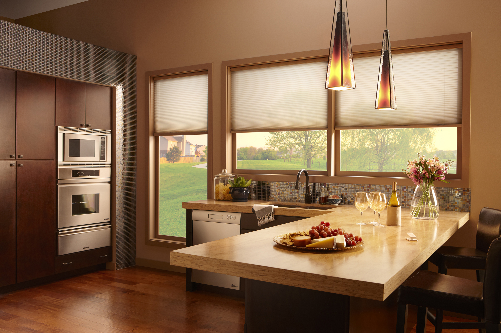

Smart-Home Activation
In 2021, I designed Lutron's first mobile activation experience for large-scale smart home systems. The feature was one of the key selling points for Lutron's 3rd-Gen home system – RadioRA 3.

Lutron manufactures smart lighting and shading systems for millions of homes and commercial places around the world.
Lutron's high-end system is not on retail market. People get it through home contractors.

Today, contractors use Lutron’s PC software to program and activate a Lutron system.
Activating light controls
Activating shades